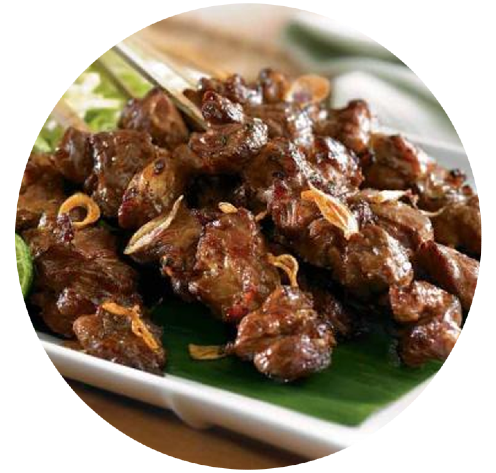
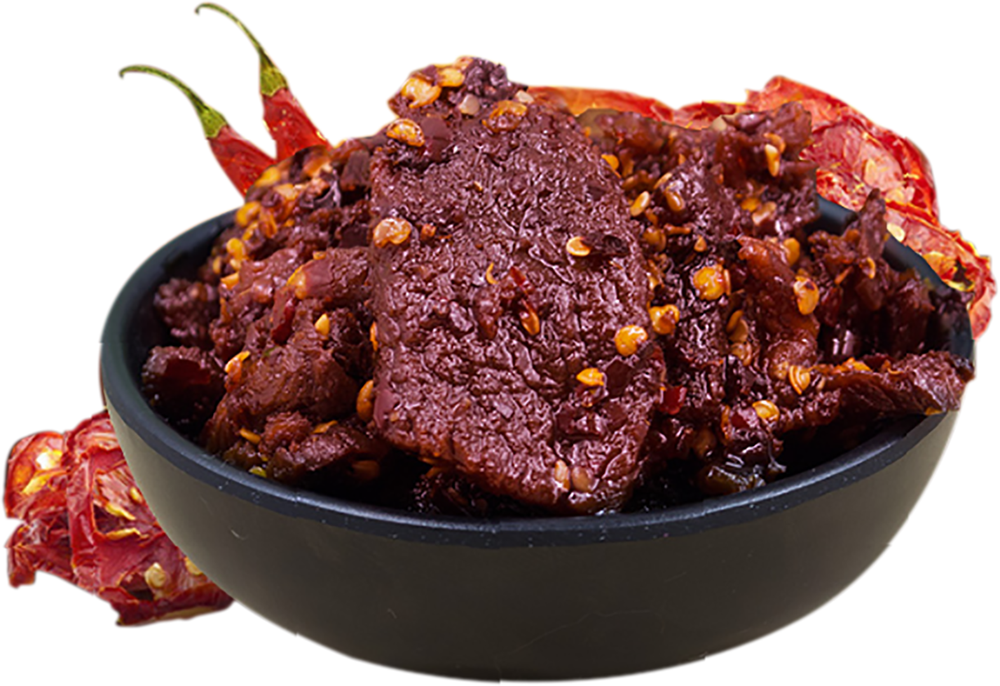
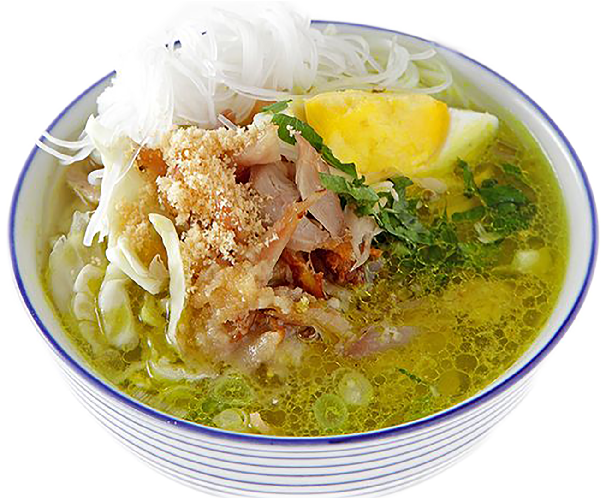
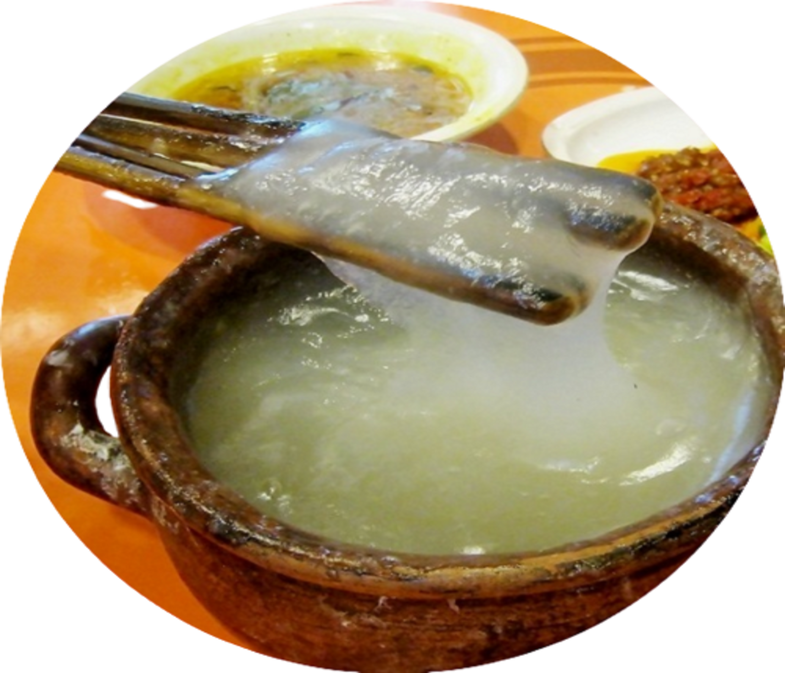
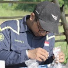

Makanan bukan hanya masakan yang akan berakhir di perutmu, melainkan sebuah petualangan yang
patut dinikmati dan dihargai.
Menu Terpopuler
Gado - Gado
DKI Jakarta, Jawa Barat, Jawa Timur
Gado-gado adalah salah satu makanan khas yang berasal dari Indonesia yang berupa
sayur-sayuran
yang direbus dan dicampur jadi satu, dengan bumbu kacang atau saus dari kacang tanah dan
yang
dihaluskan disertai irisan telur dan pada umumnya banyak yang menambahkan kentang rebus
yang
sudah dihaluskan untuk saus gado gado kentang rebus dimasak bersamaan dengan bumbu
kacang
kemudian di atasnya ditaburi bawang goreng.
Sate
Jawa, Madura, Padang, Makassar
Sate atau satai adalah makanan yang terbuat dari daging yang dipotong kecil-kecil dan
ditusuk
sedemikian rupa dengan tusukan lidi tulang daun kelapa atau bambu kemudian dipanggang
menggunakan
bara arang kayu. Sate disajikan dengan berbagai macam bumbu yang bergantung pada variasi
resep
sate.
Daging yang dijadikan sate antara lain daging ayam, kambing, domba, sapi, babi, kelinci,
kuda,
dan lain-lain.
Sate diketahui berasal dari Jawa, Indonesia, dan dapat ditemukan di mana saja di
Indonesia dan
telah dianggap sebagai salah satu masakan nasional Indonesia

Rendang
Sumatera Barat
Rendang adalah masakan daging yang berasal dari Minangkabau. Masakan ini dihasilkan dari proses
memasak suhu rendah dalam waktu lama menggunakan aneka rempah-rempah dan santan. Proses
memasaknya memakan waktu berjam-jam (biasanya sekitar empat jam) hingga yang tinggal hanyalah
potongan daging berwarna hitam pekat dan dedak. Dalam suhu ruangan, rendang dapat bertahan
hingga berminggu-minggu. Rendang yang dimasak dalam waktu yang lebih singkat dan santannya belum
mengering disebut kalio, berwarna cokelat terang keemasan.

Soto
Berbagai daerah di Indonesia
Soto adalah makanan khas Indonesia seperti sop yang terbuat dari kaldu daging dan sayuran. Daging
yang paling sering digunakan adalah daging sapi dan ayam, tetapi ada pula yang menggunakan
daging babi atau kambing. Berbagai daerah di Indonesia memiliki soto khas daerahnya
masing-masing dengan komposisi yang berbeda-beda, misalnya soto Madura, soto Kediri, soto
Pemalang, soto Lamongan, soto Jepara, soto Semarang, soto Kudus, soto Betawi, soto Padang, soto
Bandung, sroto Sokaraja, soto Banjar, soto Medan, dan coto Makassar. Soto juga diberi nama
sesuai isinya, misalnya soto ayam, soto babat, atau soto kambing. Ada pula soto yang dibuat dari
daging kaki sapi yang disebut dengan soto sekengkel.

Papeda
Maluku, Papua
Papeda adalah makanan berupa bubur sagu khas Maluku dan Papua yang biasanya disajikan
dengan
ikan tongkol atau
mubara yang dibumbui dengan kunyit. Papeda berwarna putih dan bertekstur lengket
menyerupai lem
dengan rasa yang tawar.
Selain kuah kuning dan ikan, bubur papeda juga dapat dinikmati dengan sayur ganemo yang
diolah
dari daun melinjo muda
yang ditumis dengan bunga pepaya muda dan cabai merahPapeda merupakan makanan yang kaya
serat,
rendah kolesterol dan
cukup bernutrisi.

Fajar Ali Ramadhan
Anything that can happen will happen.

Taufiq Widi Nugroho
Jadi diri Sendiri aja.
Era Desti Ramayani
Sabar, Syukur dan Ikhlas.
Jodi Raina
Tetap tenang walau tantangan menghadang, setiap tantangan adalah pelajaran.
Laga Dily
Belajar dan berusaha dengan semangat bismillah dan alhamdulillah.